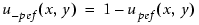

model_layer file block
Describes topographical models inside model-layer files or litho model files.
Defines a topographical model as a block inside a litho model file. The litho model file is optimized with Calibre nmModelflow. The information defined in the topographical model instructs Calibre WORKbench to combine multiple optical model characteristics in order to model transitional exposure effects.
The optimized topo_model interpolates multiple transitional optical models between multiple film stacks (film and film2, and potentially film3).
topo_model ‘{’
version 1
modeltype TOPO
transit te1 te2 …teT
from umin
to umax
[dsigma value] | [density {exposure pe1 [pe2 … peT]} |
{layer1 layer2 … layerT}]
[property name]
[mtype {efield | zeroorder}]
[dupsize dupsize_value]
[transit_dose dte1 dte2 … dteT]
[csigma csigma_value]
[cterm cindex cterm_value]
[cquadratic_mult cquad_value]
[fsigma fsigma_value]
[fterm findex fterm_value]
[fwsigma fwsigma_value]
[fwterm fwindex fterm_value]
[fwupsize fwupsize_value]
[fwasym fwasym_value]
[gsigma gsigma_value]
[gterm gindex gterm_value]
[gupsize gupsize_value]
[isigma isigma_value]
[iterm iindex iterm_value]
[iupsize iupsize_value]
[obiasinit globalrxbias]
[obiasmax obiassaturation_value]
[obiaswsat obiassaturation_width]
[oterm oindex otermvalue]
[squadratic_mult squad_value]
[squadratic_mult_im squadim_value]
[ssigma ssigmavalue]
sterm sindex sterm_value
[stermim sindex stermim_value]
[supsize supsize_value]
[tsigma tsigmavalue]
[tsurface {active | field}]
tterm tindex tterm_value
[ttermim tindex ttermim_value]
[t2sigma t2sigma_value]
[t2term t2index t2value]
[t4sigma t4sigma_value]
[t4term t4index t4value]
[vsigma vsigma_value]
[vterm vindex vterm_value]
[c2term c2index c2term_value]
[c2quadratic_mult c2quad_value]
[c2sigma c2sigma_value]
[s2term s2index s2term_value]
[s2quadratic_mult s2quad_value]
[s2sigma s2sigma_value]
[so2sigma so2sigma_value]
[so2term so2index so2term_value]
[to2sigma to2sigma_value]
[to2surface {active | field}]
[to2term to2index to2term_value]
[t2o2sigma t2o2sigma_value]
[t2o2term t2o2index t2o2term_value]
[t4o2sigma t4o2sigma_value]
[t4o2term t4o2index t4o2term_value]
[execute_mode execute_mode_number]
[linearity {linear | efield}]
‘}’Some parameters are expressed in “P1” units. One P1 unit corresponds to 1 optical wavelength in photoresist. For example, a 248 nm laser illumination lambda and a 1.75 index of refraction results in a P1 unit that is equal to 141.7 nm.
A required parameter specifying the model version. The only accepted value is 1.
A required parameter specifying the model type. The only accepted value for topographical models is TOPO.
A required parameter that references topographical optical models by number. Each number used must reference one of the optical models defined with the optical_model statement inside the litho model.
For single densities, the ordering of optical models is required. The oxide exposure must be first and the silicon exposure must be second. The topmost layer exposure must be last.
For multiple densities, the only ordering requirements are that each transit value specified corresponds with the order of the specified density exposures.
to umax
A required pair of parameters specifying the endpoints of the optical model list to be sampled by transitional exposures. umin must be less than umax, and both must be non-negative integers.
An optional value used to specify the density diffusion length in P1 units, used for single density configurations. In this case, converting a diffusion length from um to P1 units uses the formula:
P1 = sqrt(2) * length_um * K_ref / optical_lambda where K_ref is the resist refractive index. The default value is sqrt(2)*0.05*1.75/0.248 = 0.498966, corresponding to 50nm.
This option is only used for post-PC configurations. Single density configurations should use dsigma instead.
An optional parameter that references density optical models by exposure number or by underlying layer name or number. These references correspond to the values specified for transit te1… teT. Calibre WORKbench calculates density exposures as convolutions of the specified wafer stack layers with the Gaussian kernel. You specify the kernel parameters in a density optical model.
For multiple density exposures, you must specify a single negative value of the density parameter as part of the list. This negative density value indicates that the density corresponds to the “transitional type” exposure that belongs to a field area, usually the oxide stack. The field density is calculated using the following formula:

An example for two density exposures might have the following code:
transit 0 1
density exposure -2 2
from 0
to 1
where:
The 0th transitional exposure corresponds to oxide optics.
The 1st transitional exposure corresponds to silicon optics.
Masks 0 and 1 are specified as the implant layer.
Mask 2 is specified as the Rx layer.
The density of the 0th transitional exposure is modulated by the density exposure 1-u(x,y) and the 1st transitional exposure is modulated by the density exposure u(x,y).
For multiple density underlying layers (which is different from the underlying layers specification in the model-layer file), specify the type of layer for each transit exposure using the following keywords:
oxide — Specifies an underlying oxide (field) stack.
oxide2 — Specifies an underlying oxide2 (field) stack.
active — Specifies an underlying active silicon (RX) stack.
active2 — Specifies an underlying active2 (SOI) stack.
poly — Specifies an underlying poly stack.
finfet — Specifies an underlying FinFET stack.
An example for density underlying layers thusly resembles the following code:
transit 0 1 2
density oxide active poly
from 0
to 1An optional parameter specifying an optical property (such as beamfocus or stack_weight) to be sampled for the transitional exposures between the umin and umax values.
An optional parameter specifying that all signals are multiplied by the electrical field (efield argument) or by the zeroth order harmonic of the mask (zeroorder argument).
An optional parameter that upsizes the density layer, usually the Rx layer, by the dupsize_value in P1 units. The upsize function happens before convolution. The default is 0.
The dupsize option is only used for internal density calculations. It is not allowed when calibrating external density.
An optional parameter specifying a list of real numbers, one per dose, that are used as transitional intensity multipliers.
An optional parameter specifying the diffusion length of the corner diffraction kernels in P1 units. The default value is 1.
An optional argument specifying the corner diffraction of a single kernel. Each cterm kernel gets its own line.
cindex is an integer value between 0 and 23, inclusive (24 signals). The number of terms for each signal can be up to 24 for fasttopo 2 mode, but the recommended (default) number of terms is 8 (index of 7). You cannot use index values higher than 7 for fasttopo 0 mode.
cterm_value is a multiplier for the corner diffraction kernel used with the corresponding cindex.
An optional argument specifying a multiplier for the quadratic part of the corner diffraction signal. The default is 0.
An optional parameter that specifies the size in P1 units for all FinFET kernels. The default is 1.
An optional parameter that specifies the multiplier for the nth term for a FinFET scattering signal kernel, corresponding to findex. This kernel is only used when underlying finfet layers are present. The kernels affect “FinFET over active” layout regions and “active not FinFET” regions of active layout features that interact with FinFET structures.
An optional parameter that specifies the value of the asymmetry multiplier for the FinFET sidewall signal. fwasym_value is a dimensionless floating point integer between 0 and 1, and defines the power ratio of the signal sources between the horizontal and vertical fin sidewalls. The power of sources on the vertical fin sidewalls is computed as (1-fwasym_value) for the linearity intensity, and sqrt(1-fwasym_value^2) for the linearity efield.
The default value is 1, which assumes horizontal fin sidewalls only.
Setting fwasym_value to 0 assumes vertical fin sidewalls only.
Values between 0 and 0.5 correspond to cases of continuous vertical sidewalls and perforated horizontal sidewalls.
Values between 0.5 and 1.0 correspond to cases of perforated vertical sidewalls and continuous horizontal sidewalls.
An optional parameter that specifies the size in P1 units for all FinFET sidewall scattering kernels. The default is 1.
An optional parameter that specifies the multiplier for the nth term for a FinFET sidewall scattering signal kernel, corresponding to findex. This kernel is only used when underlying finfet layers are present. The kernels affect “FinFET over active” layout regions and “active not FinFET” regions of active layout features that interact with FinFET structures.
An optional parameter that moves the FinFET sidewall layer outward in P1 units by the specified amount before topo signal calculation. Must be positive. The default is 0.
An optional parameter that specifies the size of the gate scattering kernels in P1 units. The default is 1.
An optional parameter that specifies a multiplier for the kernel of the gate scattering signal corresponding to gindex. These kernels affect only layout regions with poly over active (the PC stack).
gindex is an integer value between 0 and 23, inclusive (24 signals). The number of terms for each signal can be up to 24 for fasttopo 2 mode, but the recommended (default) number of terms is 8 (index of 7). You cannot use index values higher than 7 for fasttopo 0 mode.
gterm_value is the multiplier.
An optional parameter that upsizes the gate part of the poly layer by gupsize_value in P1 units. The default is 0. Gate polygons are detected as the result of a logical AND between poly and Rx polygons.
An optional parameter that specifies the size of the poly interconnect kernels in P1 units. The default is 1.
An optional parameter that specifies a multiplier for the kernel of the poly interconnect scattering signal corresponding to iindex. These kernels affect regions that are not poly over active.
iindex can be between 0 and 23, inclusive (24 signals). The number of terms for each signal can be up to 24 for fasttopo 2 mode, but the recommended (default) number of terms is 8 (index of 7). You cannot use index values higher than 7 for fasttopo 0 mode.
iterm_value is the multiplier used with the corresponding iindex.
An optional parameter that upsizes the interconnect part of the poly layer by iupsize_value in P1 units. The default is 0. Interconnect polygons are detected as the result of a logical NOT between poly and Rx polygons.
An optional parameter specifying the upsize value in P1 units. This value is applied to all original RX features before internal density simulations and topo signal computations.
After the obiasinit operation completes, all edges in the RX layer are moved by the distance globalrxbias. The globalrxbias value can be positive or negative. Specifying a positive value means that an RX edge moves to the inside of the RX feature; specifying a negative value moves it to the outside of the original feature. The typical absolute value of globalrxbias is between 0.15 and 0.65 P1 units. The recommended range is from -0.6 to 0.6. The default is 0.
An optional parameter that specifies the saturation value of the variable part of the oxide bias in P1 units. It assumes that any RX edge (or part of an edge) forms a trench with a paired RX edge (or part of an edge). If any RX edge has no paired RX edge, then it is considered that the corresponding trench has infinite width.
The absolute value of the variable oxide bias increases monotonically with the width reaching a saturation value of obiassaturation_value at the width of obiassaturation_width.
The obiassaturation_value can be positive or negative. Specifying a positive value means that an RX edge moves to the inside of the RX feature; specifying a negative value moves it to the outside of the original feature. A zero value means that there is no variable part of the oxide bias. The recommended range is from -0.6 to 0.6. The default is 0.
An optional parameter that specifies the width in P1 units at which the variable trench bias stops increasing.
Trenches that are wider than obiassaturation_width are biased by obiassaturation_value. The obiassaturation_width value must be positive. This argument is only used when obiassaturation_value is not equal to zero. The recommended range of obiassaturation_width is between 0.5 and 3.0. The default is 2.0 P1 units.
An optional parameter that specifies a multiplier for the kernel of the oxide bias polynomial corresponding to oindex.
oindex is an integer value between 0 and 2, inclusive. Each oterm kernel must be specified on its own line.
oterm_value is the multiplier.
An optional parameter specifying a multiplier for the quadratic part of the sidewall reflection signal. The default is 0.
An optional parameter specifying a multiplier for the quadratic imaginary part of the sidewall reflection signal. The default is 0.
An optional parameter specifying the diffusion length of the sidewall reflection kernels in P1 units. The default is 1.
A required parameter specifying the sidewall reflection of a single kernel. Each sterm kernel gets its own line.
sindex is an integer value between 0 and 23, inclusive (24 signals). The number of terms for each signal can be up to 24 for fasttopo 2 mode, but the recommended (default) number of terms is 8 (index of 7). You cannot use index values higher than 7 for fasttopo 0 mode.
sterm_value is a multiplier for the sidewall kernel used with the corresponding sindex.
An optional parameter specifying the imaginary part of the sidewall signal for the sindex’th kernel. It is added to the final intensity.
An optional parameter specifying the upsize value for the active layer to be used in sidewall reflection signal calculation. Active layer edges are shifted outwards by the specified value in P1 units before sidewall signals are added.
An optional parameter specifying the diffusion length of the trench radiation kernel in P1 units. The default is 1.
An optional parameter designating the region in which to apply trench radiation signal modifiers to the image intensity. “active” specifies the Rx region, and “field” specifies that it is not the Rx region. The default value is “field”.
A required parameter specifying a multiplier for the kernel of a trench radiation signal.
tindex is an integer value between 0 and 23, inclusive (24 signals). The number of terms for each signal can be up to 24 for fasttopo 2 mode, but the recommended (default) number of terms is 8 (index of 7). You cannot use index values higher than 7 for fasttopo 0 mode.
tterm_value is the multiplier value.
An optional parameter specifying the imaginary part of the trench radiation signal for the tindex’th kernel. It is added to the final intensity.
An optional parameter specifying the diffusion length of the trench2 radiation signal kernel in P1 units.
An optional parameter specifying a multiplier for the kernel of a trench2 radiation signal. It describes the height along the trench width with a Chebyshev second order polynomial.
t2index is an integer value between 0 and 23, inclusive (24 signals). The number of terms for each signal can be up to 24 for fasttopo 2 mode, but the recommended (default) number of terms is 8 (index of 7). You cannot use index values higher than 7 for fasttopo 0 mode.
t2term_value is the multiplier value.
An optional parameter specifying the diffusion length of the trench4 radiation signal kernel in P1 units. The default value is 1.
An optional parameter specifying a multiplier for the kernel of a trench4 radiation signal. It describes the height along the trench width with a Chebyshev fourth order polynomial.
t4index is an integer value between 0 and 23, inclusive (24 signals). The number of terms for each signal can be up to 24 for fasttopo 2 mode, but the recommended (default) number of terms is 8 (index of 7). You cannot use index values higher than 7 for fasttopo 0 mode.
t4term_value is the multiplier value.
An optional parameter specifying a kernel multiplier for a vertical corner diffraction signal.
vindex is an integer number from 0 to 23, inclusive (24 signals). The number of terms for each signal can be up to 24 for fasttopo 2 mode, but the recommended (default) number of terms is 8 (index of 7). You cannot use index values higher than 7 for fasttopo 0 mode.
vterm_value is a multiplier for the vindex vertical corner diffraction signal kernel.
An optional parameter specifying the diffusion length of the vertical corner diffraction kernel in P1 units. The default is 1.
An optional parameter used for corner2 signal kernels (for SOI processes). c2index is an integer from 0 to 23, inclusive (24 signals). The number of terms for each signal can be up to 24 for fasttopo 2 mode, but the recommended (default) number of terms is 8 (index of 7). You cannot use index values higher than 7 for fasttopo 0 mode.
c2term_value is the multiplier for the c2index corner2 diffraction signal kernel.
An optional parameter that specifies the multiplier in front of the quadratic part of the corner2 diffraction signal (for SOI processes). Default is 0.
An optional parameter that specifies the diffusion length of the corner2 diffraction kernels in P1 units (for SOI processes). Default is 1.
An optional parameter that specifies a sidewall2 reflection signal (for SOI processes).
s2index is an integer i from 0 to 23, inclusive (24 signals). The number of terms for each signal can be up to 24 for fasttopo 2 mode, but the recommended (default) number of terms is 8 (index of 7). You cannot use index values higher than 7 for fasttopo 0 mode.
s2term_value is a multiplier for the s2index of the ith sidewall2 kernel. The sidewall2 signal is added to the final intensity in linear and quadratic fashions.
An optional parameter that specifies the multiplier for the quadratic part of the sidewall2 reflection signal (for SOI processes). Default is 0.
An optional parameter that specifies the diffusion length of the sidewall2 reflection kernels in P1 units (for SOI processes). Default is 1.
An optional parameter that specifies the diffusion length of the sidewallo2 reflection kernels in P1 units (for STI processes). Default is 1.
An optional parameter that specifies a sidewallo2 reflection signal (for STI processes).
so2index is an integer i from 0 to 23, inclusive (24 signals). The number of terms for each signal can be up to 24 for fasttopo 2 mode, but the recommended (default) number of terms is 8 (index of 7). You cannot use index values higher than 7 for fasttopo 0 mode.
so2term_value is a multiplier for the so2index of the ith sidewallo2 kernel. The sidewallo2 signal is added to the final intensity in linear and quadratic fashions.
An optional parameter that specifies the diffusion length of the trencho2 radiation kernel in P1 units (for STI processes). Default is 1.
An optional parameter that specifies the region where the trench radiation signal is added to the image intensity.
active — Applies to the RX layout region.
field — Applies to the not-RX layout region (default).
An optional parameter that specifies a trencho2 radiation signal (for STI processes).
to2index is an integer i from 0 to 23, inclusive (24 signals). The number of terms for each signal can be up to 24 for fasttopo 2 mode, but the recommended (default) number of terms is 8 (index of 7). You cannot use index values higher than 7 for fasttopo 0 mode.
to2term_value is a multiplier for the to2index of the ith trencho2 kernel. The trencho2 signal is added to the final intensity in linear and quadratic fashions.
An optional parameter that specifies the diffusion length of the trench2o2 radiation kernels in P1 units (for STI processes). Default is 1.
An optional parameter that specifies a trench2o2 radiation signal (for STI processes). For this signal, the trench form (height) along the trench width is defined with a Chebyshev polynomial of the 2nd order.
t2o2index is an integer i from 0 to 23, inclusive (24 signals). The number of terms for each signal can be up to 24 for fasttopo 2 mode, but the recommended (default) number of terms is 8 (index of 7). You cannot use index values higher than 7 for fasttopo 0 mode.
t2o2term_value is a multiplier for the t2o2index of the ith trench2o2 kernel. The trench2o2 signal is added to the final intensity in linear and quadratic fashions.
An optional parameter that specifies the diffusion length of the trench4o2 radiation kernels in P1 units (for STI processes). Default is 1.
An optional parameter that specifies a trench4o2 radiation signal (for STI processes). For this signal, the trench form (height) along the trench width is defined with a Chebyshev polynomial of the 4th order.
t4o2index is an integer i from 0 to 23, inclusive (24 signals). The number of terms for each signal can be up to 24 for fasttopo 2 mode, but the recommended (default) number of terms is 8 (index of 7). You cannot use index values higher than 7 for fasttopo 0 mode.
t4o2term_value is a multiplier for the t4o2index of the ith trench4o2 kernel. The trench4o2 signal is added to the final intensity in linear and quadratic fashions.
An optional parameter that sets the execution mode for the topo model.
0 — Specifies “ordinary” mode, where standard routines for separate fast fourier transform (fft) operations are used for topo signal calculations. This is the default setting.
1 — Specifies “transposed” mode, where special routines that aggregate fft operations and spectra processing are used. Usually “transposed” mode is 20-30% faster than “ordinary” mode.
An optional parameter that controls how the signals are added to the intensity.
intensity — Adds signals linearly to intensity.
efield — Adds signals linearly to square root of the intensity, then the result is squared. The default is “efield”.
This example describes a topo_model for a pre-PC stack. Its sterms and tterms have already been optimized, since the sterms and tterms have non-zero values.
transit 0 1
from 0
to 1
transit_dose 1 1
squadratic_mult 0.0031580031
sterm 0 -0.0015999079
sterm 1 0.0047998875
sterm 2 -0.0015999079
sterm 3 -0.0073601007
sterm 4 0.0041601658
sterm 5 -0.0047995001
sterm 6 0.0015990734
sterm 7 0.0022394657
tsurface active
tterm 0 0.1200005
tterm 1 -0.12320461
tterm 2 0.043184131
tterm 3 -0.024000928
tterm 4 -0.12000256
tterm 5 -0.02400133
tterm 6 -0.15520051
tterm 7 -0.12000051